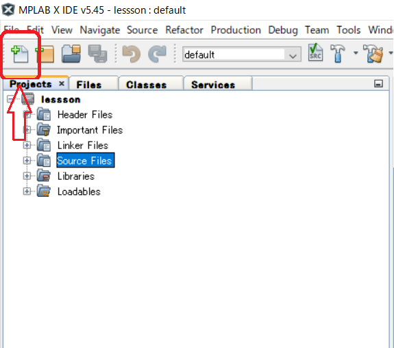
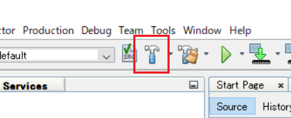
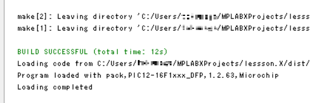
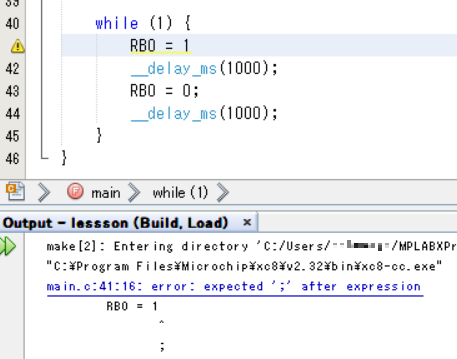

PIC講習/プログラムの作成と書き込み
概要
今回は、MPLAB X IDEの使い方と、どのようにPICに書き込むのかを説明します。
重要語
プロジェクト
プログラムを作成するためのファイル群
ソースファイル
処理を記したファイル
ビルド
コンパイルに加え、ライブラリなどの必要なファイルをつなぐこと
必要語
今回の必要語はありません。
プロジェクトの作成
では、プロジェクトを作成していきますので、まずはMPLAB X IDEを起動してください。
Step1
画面右上のNew Projectのアイコンをクリックしてください。
Step2
Microchip EmbeddedとStadalone Projectを選択して、Next>をクリックしてください。
Step3
DeviceはPIC16F1827を選択して（キーボードから入力できるので、それを活用するとよいです）、Next>をクリックしてください。
Step4
デバッグヘッダは使わないので、そのままNext>をクリックしてください。
Step5
コンパイラは、XC8を使います。XC8を選択して、Nextをクリックしてください。
Step6
Project Nameにはプロジェクトの名前を入力してください（ここではlessonとしましたが、何でもよいです）。
そして、EncodingはUTF-8にすると、日本語が正常に使えるようになります（Shift_JISでも日本語は使えますが、0x5cの問題があるのでおすすめしません）。
最後に、Finishをクリックすると、プロジェクトの作成が完了します。
ソースファイルの作成
続いて、ソースファイルを作成していきます。
Step1
画面右上の、New Fileのアイコンをクリックしてください（Source Filesのところを選択した状態でクリックすると、確実にここにソースファイルが作られるのでよいです）。

Step2
CategoriesはC、File TypesはC Source Fileを選択してNext>をクリックしてください。
Step3
ファイル名を入力してください（ここではmainとしましたが、何でもよいです）。
最後に、Finishをクリックしてください。これで、ソースファイルの作成は完了です。
ビルド
では、ビルドしていきます。
コード
以下のコードをコピー&ペーストしてください。
test
/****************************
main.c
PIC16F1827
MPLAB X IDE v5.45
XC8 v2.32
2021/03/23
****************************/
#include <xc.h>
#define _XTAL_FREQ 8000000
// コンフィギュレーションの設定
#pragma config FOSC = INTOSC
#pragma config WDTE = OFF
#pragma config PWRTE = ON
#pragma config MCLRE = OFF
#pragma config CP = OFF
#pragma config CPD = OFF
#pragma config BOREN = ON
#pragma config CLKOUTEN = OFF
#pragma config IESO = OFF
#pragma config FCMEN = OFF
#pragma config WRT = OFF
#pragma config PLLEN = OFF
#pragma config STVREN = ON
#pragma config BORV = HI
#pragma config LVP = OFF
void main() {
OSCCON = 0b01110010;
ANSELA = 0x00;
ANSELB = 0x00;
PORTA = 0xFF;
PORTB = 0xFF;
TRISA = 0x20;
TRISB = 0x00;
while (1) {
RB0 = 1;
__delay_ms(1000);
RB0 = 0;
__delay_ms(1000);
}
}
ビルドの実行
右上のビルドをクリックしてください。

ビルド終了
ビルドが正常に終了すると、「BUILD SUCCESSFUL」というメッセージが出ます。

異常に終了すると、「BUILD FAILED」というメッセージが出ます。以下は、セミコロンを忘れてしまった場合です。
しかし、このコードをコピーしてこのメッセージが出た場合は、コンパイラが入っていないか、何らかの設定が間違っている可能性があります。
